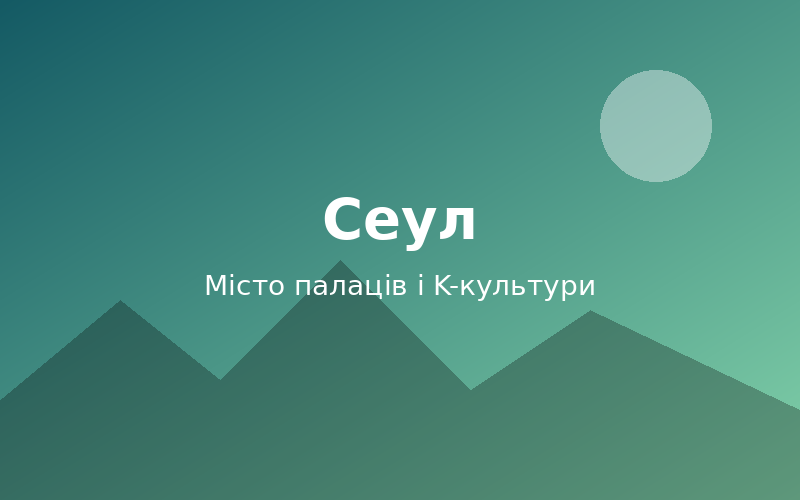

Токіо
Місто, де неонові хмарочоси сусідять із тихими храмами, а суші смакують найкраще в світі.
Привіт, мандрівнику! Подорожі з друзями — це спільний сміх на пероні, пізні розмови в кав'ярнях і історії, які згадуєш роками. Ми зібрали три міста, що назавжди лишилися в наших серцях. Готовий зазирнути в наш щоденник?

Місто, де неонові хмарочоси сусідять із тихими храмами, а суші смакують найкраще в світі.
Королівські палаци, корейські BBQ, вуличні снеки та атмосфера K-культури на кожному кроці.
Сонячні пляжі, будинки в стилі арт-деко та смак свіжого кубинського кортадо.
Global Adventures Blog — це наш спільний щоденник подорожей. Тут ми ділимося історіями, фото та порадами, щоб ви теж захотіли зібрати рюкзак.